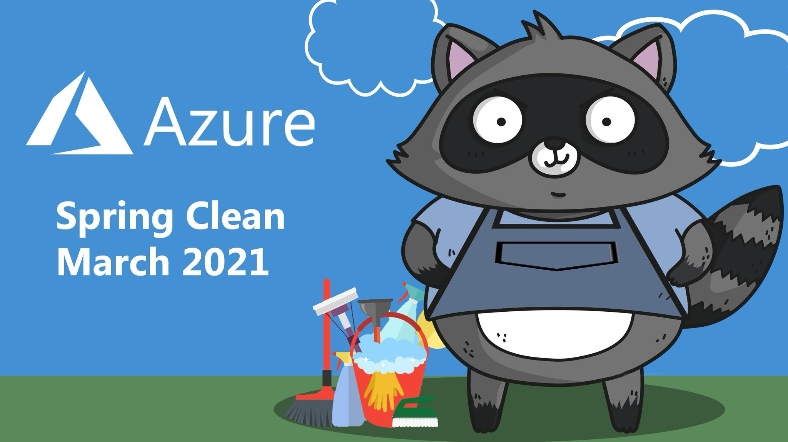
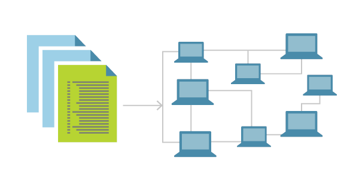
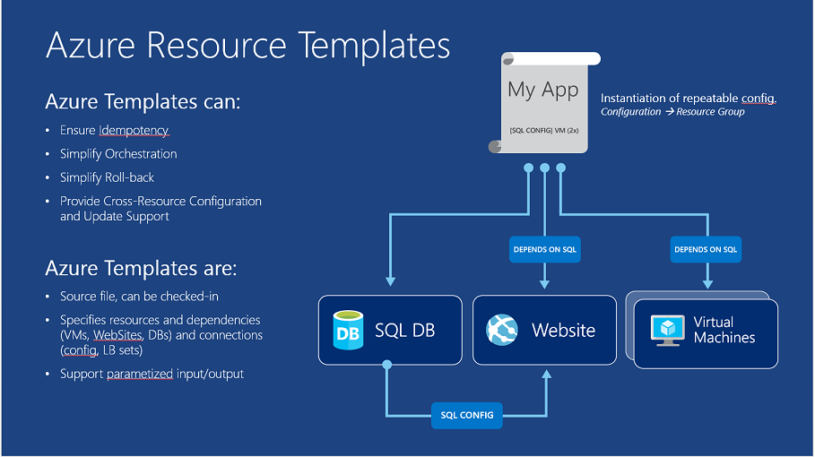
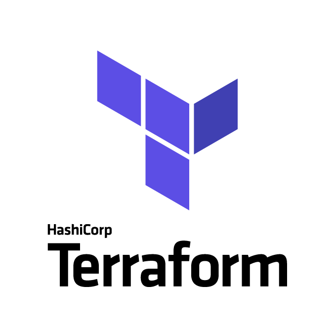

Hey everyone,
Thanks for joining the Azure Spring Clean online event again, in which the Azure community steps up once more, sharing the best tips & tricks on how to keep your Azure environments clean. Discussing optimizations, covering new services and features or overall giving you a view on how to manage your Azure subscriptions even better.
You can check out all other blog posts or videos, which can guide you with best practices, lessons learned, or help you with some of the more difficult Azure Management topics at Azure Spring Clean.
You can also keep an eye on Twitter for the hashtag #AzureSpringClean so you won’t miss any of these Azure “spring” cleaning tips.
I had the joy of participating again this year and decided to share a bit about IAC - Infrastructure As Code, sharing my view on some of the interesting tools and practices that could help you in automating your Azure deployments.
What is Infrastructure As Code
By using Infrastructure as Code, you define the infrastructure that needs to be deployed. The infrastructure code becomes part of your project. Just like the application source code, you store the infrastructure code in a source repository (GitHub, Azure Repos,…) and version it. Anyone on your team can run the code and deploy similar environments. Infrastructure as Code (IaC) is the management of infrastructure (networks, virtual machines, load balancers, and connection topology), but can also be used to deploy the baseline of your platform services (App Services, Functions, Database services,…). It is using a descriptive model, relying on the same versioning concept used by DevOps teams for their source code.
Infrastructure as Code helps in avoiding or minimizing the problem of environment drift during a release deployment. Without IaC, a cloud team must maintain the settings of individual deployment environments (Dev/Test, Staging, Production). Over time, each environment tends to become a snowflake, that is, a unique configuration that cannot be reproduced automatically. This also leads to inconsistency among environments which again leads to issues during deployments. With snowflakes, most deployments and maintenance of the underlying cloud infrastructure is based on manual processes, maybe a combination of stand-alone scripts coming from all over the place, are hard to track and are the main source for errors.
Another characteristic of IaC is Idempotence. Idempotence is the principal that a deployment command always sets the target environment into the same configuration, regardless of the environment’s starting state or regardless the environment itself. Idempotency is achieved by either automatically configuring an existing target or by discarding the existing target and redeploying it from scratch (Spring Clean anyone? :)).
Accordingly, with IaC, cloud teams apply changes to the environment description and integrate versioning into the configuration model, which is typically in well-documented code formats such as JSON or YAML. If the environment should be reconfigured or changes should get applied, you edit the source (IaC-files), you are not directly touching on the target.
Teams who implement IaC can deliver stable environments rapidly and at scale. Teams avoid manual configuration of environments and enforce consistency by representing the desired state of their environments via code. Infrastructure deployments with IaC are repeatable and prevent runtime issues caused by configuration drift or missing dependencies. DevOps teams can work together with a unified set of practices and tools to deliver applications and their supporting infrastructure rapidly, reliably, and at scale.

Where to get started
Now you know what Infrastructure as Code is, as well as recognize some of the main benefits, the typical next question is where to get started. The good news is, you can start right away, since Azure provides a few mechanisms out-of-the-box to create, update or import templates, known as ARM Templates (Azure Resource Manager). (Amazon AWS is offering something similar called CloudFormation btw…)
Besides using the Microsoft ARM scenario, several third-party tools exist, allowing you to embrace all concepts of Infrastructure as Code. These tools are typically supporting multiple cloud platforms, and not just targeting one single cloud vendor.
In the remaining part of this article, I’ll share some insights in ARM Templates, as well as discussing some other tools that I’ve used over the years (and still am) with some specifics.
ARM Templates
Probably the first scenario of using IaC in Azure is Azure Resource Manager (ARM) templatesThe template is a JavaScript Object Notation (JSON) file that defines the infrastructure and configuration for your project. The template uses declarative syntax, which lets you state what you intend to deploy without having to write the sequence of programming commands to create it. In the template, you specify the resources to deploy and the properties for those resources.
ARM Templates can be authored in any editor (JSON is just text), but I can definitely recommend VS Code to do that. And make sure you install the ARM Template tools extension. Once you have your ARM template file(s), deploying them is possible from PowerShell, Azure CLI or directly from the Azure Portal.

A sample ARM Template (which you can use right away…) to deploy a Windows 2019 Virtual Machine with Visual Studio, looks like this:
{
"$schema": "https://schema.management.azure.com/schemas/2019-04-01/deploymentTemplate.json#",
"contentVersion": "1.0.0.0",
"parameters": {
"adminUsername": {
"type": "string",
"minLength": 1,
"defaultValue": "labadmin",
"metadata": {
"description": "Username for the Virtual Machine."
}
},
"adminPassword": {
"type": "securestring",
"defaultValue": "L@BadminPa55w.rd",
"metadata": {
"description": "Password for the Virtual Machine."
}
}
},
"variables": {
"imagePublisher": "MicrosoftVisualStudio",
"imageOffer": "VisualStudio2019latest",
"imageSku": "vs-2019-comm-latest-ws2019",
"OSDiskName": "jumpvmosdisk",
"nicName": "jumpvmnic",
"addressPrefix": "10.1.0.0/16",
"subnetName": "Subnet",
"subnetPrefix": "10.1.0.0/24",
"vhdStorageType": "Premium_LRS",
"publicIPAddressName": "jumpvmip",
"publicIPAddressType": "static",
"vhdStorageContainerName": "vhds",
"vmName": "jumpvm",
"vmSize": "Standard_DS8_V2",
"virtualNetworkName": "jumpvmVNet",
"vnetId": "[resourceId('Microsoft.Network/virtualNetworks', variables('virtualNetworkName'))]",
"subnetRef": "[concat(variables('vnetId'), '/subnets/', variables('subnetName'))]",
"vhdStorageAccountName": "[concat('vhdstorage', uniqueString(resourceGroup().id))]",
"scriptFolder": ".",
"scriptFileName": "config-winvm.ps1",
"fileToBeCopied": "ExtensionLog.txt"
},
"resources": [
{
"type": "Microsoft.Storage/storageAccounts",
"name": "[variables('vhdStorageAccountName')]",
"apiVersion": "2016-01-01",
"location": "[resourceGroup().location]",
"tags": {
"displayName": "StorageAccount"
},
"sku": {
"name": "[variables('vhdStorageType')]"
},
"kind": "Storage"
},
{
"apiVersion": "2016-03-30",
"type": "Microsoft.Network/publicIPAddresses",
"name": "[variables('publicIPAddressName')]",
"location": "[resourceGroup().location]",
"tags": {
"displayName": "PublicIPAddress"
},
"properties": {
"publicIPAllocationMethod": "[variables('publicIPAddressType')]"
}
},
{
"apiVersion": "2016-03-30",
"type": "Microsoft.Network/virtualNetworks",
"name": "[variables('virtualNetworkName')]",
"location": "[resourceGroup().location]",
"tags": {
"displayName": "VirtualNetwork"
},
"properties": {
"addressSpace": {
"addressPrefixes": [
"[variables('addressPrefix')]"
]
},
"subnets": [
{
"name": "[variables('subnetName')]",
"properties": {
"addressPrefix": "[variables('subnetPrefix')]"
}
}
]
}
},
{
"apiVersion": "2016-03-30",
"type": "Microsoft.Network/networkInterfaces",
"name": "[variables('nicName')]",
"location": "[resourceGroup().location]",
"tags": {
"displayName": "NetworkInterface"
},
"dependsOn": [
"[resourceId('Microsoft.Network/publicIPAddresses/', variables('publicIPAddressName'))]",
"[resourceId('Microsoft.Network/virtualNetworks/', variables('virtualNetworkName'))]"
],
"properties": {
"ipConfigurations": [
{
"name": "ipconfig1",
"properties": {
"privateIPAllocationMethod": "Dynamic",
"publicIPAddress": {
"id": "[resourceId('Microsoft.Network/publicIPAddresses', variables('publicIPAddressName'))]"
},
"subnet": {
"id": "[variables('subnetRef')]"
}
}
}
]
}
},
{
"apiVersion": "2015-06-15",
"type": "Microsoft.Compute/virtualMachines",
"name": "[variables('vmName')]",
"location": "[resourceGroup().location]",
"tags": {
"displayName": "JumpVM"
},
"dependsOn": [
"[resourceId('Microsoft.Storage/storageAccounts/', variables('vhdStorageAccountName'))]",
"[resourceId('Microsoft.Network/networkInterfaces/', variables('nicName'))]"
],
"properties": {
"hardwareProfile": {
"vmSize": "[variables('vmSize')]"
},
"osProfile": {
"computerName": "[variables('vmName')]",
"adminUsername": "[parameters('adminUsername')]",
"adminPassword": "[parameters('adminPassword')]"
},
"storageProfile": {
"imageReference": {
"publisher": "[variables('imagePublisher')]",
"offer": "[variables('imageOffer')]",
"sku": "[variables('imageSku')]",
"version": "latest"
},
"osDisk": {
"name": "osdisk",
"vhd": {
"uri": "[concat(reference(resourceId('Microsoft.Storage/storageAccounts', variables('vhdStorageAccountName')), '2016-01-01').primaryEndpoints.blob, variables('vhdStorageContainerName'), '/', variables('OSDiskName'), '.vhd')]"
},
"caching": "ReadWrite",
"createOption": "FromImage"
}
},
"networkProfile": {
"networkInterfaces": [
{
"id": "[resourceId('Microsoft.Network/networkInterfaces', variables('nicName'))]"
}
]
},
"diagnosticsProfile": {
"bootDiagnostics": {
"enabled": false
}
}
},
"resources": [
{
"apiVersion": "2018-06-01",
"type": "Microsoft.Compute/virtualMachines/extensions",
"name": "[concat(variables('vmName'),'/', 'VMConfig')]",
"location": "[resourceGroup().location]",
"dependsOn": [
"[concat('Microsoft.Compute/virtualMachines/',variables('vmName'))]"
],
"properties": {
"publisher": "Microsoft.Compute",
"type": "CustomScriptExtension",
"typeHandlerVersion": "1.7",
"autoUpgradeMinorVersion":true,
"settings": {
"fileUris": [
"https://raw.githubusercontent.com/pdtit/ARMtemplates/master/JumpVM/configurevm.ps1"
],
"commandToExecute": "powershell.exe -ExecutionPolicy Unrestricted -File configurevm.ps1"
}
}
}
]
}
],
"outputs": {
"JumpVM Public IP address": {
"type": "string",
"value": "[reference(resourceId('Microsoft.Network/publicIPAddresses',variables('publicIPAddressName'))).IpAddress]"
}
}
}
You can read more information on ARM templates at the following links:
ARM template documentation
To get a headstart on using and authoring your own templates, you can use an amazing GitHub repository called Azure Quickstart Templates, providing more than a 1000 sample templates to deploy about anything on Azure.
If you are pretty unknown in the domain of ARM templates, I could recommend these sources to practice:
Tutorial: Create and deploy your first ARM template as well as Microsoft Learn: Build Azure Resource Manager templates
I also rely on ARM Templates myself a lot. Feel free to grab a few of my sample templates from my GitHub repo
Another really, really, really popular method of deploying your infrastructure to Azure is by using Terraform by Hashicorp. Hashicorp Terraform is an open-source tool for provisioning and managing cloud infrastructure, not just Azure. Using their own Terraform providers, it is possible to target more than 35 cloud backends (Azure, AWS, GCP, Kubernetes,…)

Following all concepts of IaC, with Terraform, you codify your infrastructure in configuration files in which you describe the topology of cloud resources. These resources include both Infrastructure as a Service (Virtual Machine, storage, network,…) as Platform as a Service (App Services, Kubernetes, Monitoring,…).
Some benefits of Terraform, compared to ARM Templates:
- (WAY) easier syntax (using HCL - HashiCorp Configuration Language)
- Multi-platform aware (keep in mind this still requires creating platform-specific templates)
- Terraform CLI to interact and deploy templates
- Pre-flight capability: allowing you to validate and test your deployment, before running the actual deployment
- Terraform TFState - State file, which keeps track of an already executed deployment state and becomes the starting point for future deployment updates
A sample Terraform template (you can use right away…) to deploy an Ubuntu Virtual Machine on Azure, looks like this
# Configure the Microsoft Azure Provider
provider "azurerm" {
# The "feature" block is required for AzureRM provider 2.x.
# If you're using version 1.x, the "features" block is not allowed.
version = "~>2.0"
features {}
}
# Create a resource group if it doesn't exist
resource "azurerm_resource_group" "my1stTFRG" {
name = "my1stTFRG"
location = "eastus"
tags = {
environment = "TF Demo"
}
}
# Create virtual network
resource "azurerm_virtual_network" "my1stTFVNET" {
name = "my1stTFVnet"
address_space = ["10.0.0.0/16"]
location = "eastus"
resource_group_name = azurerm_resource_group.my1stTFRG.name
tags = {
environment = "Terraform Demo"
}
}
# Create subnet
resource "azurerm_subnet" "myterraformsubnet" {
name = "mySubnet"
resource_group_name = azurerm_resource_group.my1stTFRG.name
virtual_network_name = azurerm_virtual_network.my1stTFVNET.name
address_prefixes = ["10.0.1.0/24"]
}
# Create public IPs
resource "azurerm_public_ip" "myterraformpublicip" {
name = "myPublicIP"
location = "eastus"
resource_group_name = azurerm_resource_group.my1stTFRG.name
allocation_method = "Dynamic"
tags = {
environment = "Terraform Demo"
}
}
# Create Network Security Group and rule
resource "azurerm_network_security_group" "myterraformnsg" {
name = "myNetworkSecurityGroup"
location = "eastus"
resource_group_name = azurerm_resource_group.my1stTFRG.name
security_rule {
name = "SSH"
priority = 1001
direction = "Inbound"
access = "Allow"
protocol = "Tcp"
source_port_range = "*"
destination_port_range = "22"
source_address_prefix = "*"
destination_address_prefix = "*"
}
tags = {
environment = "Terraform Demo"
}
}
# Create network interface
resource "azurerm_network_interface" "myterraformnic" {
name = "myNIC"
location = "eastus"
resource_group_name = azurerm_resource_group.my1stTFRG.name
ip_configuration {
name = "myNicConfiguration"
subnet_id = azurerm_subnet.myterraformsubnet.id
private_ip_address_allocation = "Dynamic"
public_ip_address_id = azurerm_public_ip.myterraformpublicip.id
}
tags = {
environment = "Terraform Demo"
}
}
# Connect the security group to the network interface
resource "azurerm_network_interface_security_group_association" "example" {
network_interface_id = azurerm_network_interface.myterraformnic.id
network_security_group_id = azurerm_network_security_group.myterraformnsg.id
}
# Generate random text for a unique storage account name
resource "random_id" "randomId" {
keepers = {
# Generate a new ID only when a new resource group is defined
resource_group = azurerm_resource_group.my1stTFRG.name
}
byte_length = 8
}
# Create storage account for boot diagnostics
resource "azurerm_storage_account" "mystorageaccount" {
name = "diag${random_id.randomId.hex}"
resource_group_name = azurerm_resource_group.my1stTFRG.name
location = "eastus"
account_tier = "Standard"
account_replication_type = "LRS"
tags = {
environment = "Terraform Demo"
}
}
# Create (and display) an SSH key
resource "tls_private_key" "example_ssh" {
algorithm = "RSA"
rsa_bits = 4096
}
output "tls_private_key" { value = "tls_private_key.example_ssh.private_key_pem" }
# Create virtual machine
resource "azurerm_linux_virtual_machine" "myterraformvm" {
name = "myVM"
location = "eastus"
resource_group_name = azurerm_resource_group.my1stTFRG.name
network_interface_ids = [azurerm_network_interface.myterraformnic.id]
size = "Standard_DS4_v2"
os_disk {
name = "myOsDisk"
caching = "ReadWrite"
storage_account_type = "Premium_LRS"
}
source_image_reference {
publisher = "Canonical"
offer = "UbuntuServer"
sku = "16.04.0-LTS"
version = "latest"
}
computer_name = "myvm"
admin_username = "azureuser"
disable_password_authentication = true
admin_ssh_key {
username = "azureuser"
public_key = tls_private_key.example_ssh.public_key_openssh
}
boot_diagnostics {
storage_account_uri = azurerm_storage_account.mystorageaccount.primary_blob_endpoint
}
tags = {
environment = "Terraform Demo"
}
}
As should be clear, the syntax is rather straight forward, intuitive and clean (Azure Spring Clean anyone…?)
You can find more details on Terraform for Azure here or you could grab a few of my sample template files from my Github Repo.
Pulumi
Infrastructure as Code as we already know it, typically uses language-independent data formats, such as JSON or YAML to define our infrastructure. Terraform is slightly different, and uses a Domain Specific Language (DSL), Hashicorp Configuration Language (HCL) to construct our templates.
This is where Pulumi is slightly different. With Pulumi, we don’t need to learn a DSL or use JSON or YAML. If we’re already familiar with a programming language, think of DotNet, Java, Python,… Pulumi allows you to define your cloud infrastructure using that exact same development language. Which also means you can leverage the standard functions within those programming languages too, things like loops, variables, error handling etc.
These functions are available in the other tools we’ve mentioned too. For example, creating multiple resources could be achieved by using a for loop in Python if using Pulumi or by using the copy functionality if using Azure Resource Manager (ARM).
To get started with Pulumi, you don’t need too much of tooling:
Compared to TerraForm and ARM Templates, Pulumi looks at each IaC concept as a “Project”; where within a project, you define “Stacks”. Projects are where we will store all of the code for a particular workload. You can think of a project like a source code repository, if something was going to have it’s own repo, then it should probably be it’s own project.
You can think of stacks as different instances of the code within our project, normally with differing configuration. In its simplest form you’d have a single project and a stack per environment (dev, test, prod) for example. There are a number of different patterns that you can adopt.
A sample Pulumi script could look like this:
"""An Azure Python Pulumi program"""
import pulumi
from pulumi_azure import core, storage
# Create an Azure Resource Group
resource_group = core.ResourceGroup('resource_group')
# Create an Azure resource (Storage Account)
account = storage.Account('storage',
# The location for the storage account will be derived automatically from the resource group.
resource_group_name=resource_group.name,
account_tier='Standard',
account_replication_type='LRS')
# Export the connection string for the storage account
pulumi.export('connection_string', account.primary_connection_string)
Head over to the following link to dive in some sample project practices to get Pulumi up and running for Azure: Pulumi Azure Get-Started as well as the Pulumi Azure Tutorials
Azure Bicep
The last tool I want to highlight here is back to where we started, another Microsoft-owned scenario, similar to ARM Templates, but at the same time also different.
Bicep is a language for declaratively deploying Azure resources. You can use Bicep instead of JSON for developing your Azure Resource Manager templates (ARM templates). Bicep simplifies the authoring experience by:
- providing concise syntax,
- better support for code reuse,
- and improved type safety.
Bicep is a domain-specific language (DSL), which means it’s designed for a particular scenario or domain. It isn’t intended as a general programming language for writing applications.
The JSON syntax for creating template can be verbose and require complicated expression. Bicep improves that experience without losing any of the capabilities of a JSON template. It’s a transparent abstraction over the JSON for ARM templates. Each Bicep file compiles to a standard ARM template. Resource types, API versions, and properties that are valid in an ARM template are valid in a Bicep file. There are a few known limitations in the current release.
To start with Bicep, install the required tools.
After installing the tools, try the Bicep tutorial. The tutorial series walks you through the structure and capabilities of Bicep. You deploy Bicep files, and convert an ARM template into the equivalent Bicep file.
To view equivalent JSON and Bicep files side by side, see the Bicep Playground.
If you have an existing ARM template that you would like to convert to Bicep, you can also do that, using this approach.
Bicep offers an easier and more concise syntax when compared to the equivalent JSON. You don’t use […] expressions. Instead, you directly call functions, and get values from parameters and variables. You give each deployed resource a symbolic name, which makes it easy to reference that resource in your template.
For example, the following JSON returns an output value from a resource property:
"outputs": {
"hostname": {
"type": "string",
"value": "[reference(resourceId('Microsoft.Network/publicIPAddresses', variables('publicIPAddressName'))).dnsSettings.fqdn]"
},
}
The equivalent output expression in Bicep is easier to write. The following example returns the same property by using the symbolic name publicIP for a resource that is defined within the template:
output hostname string = publicIP.properties.dnsSettings.fqdn
For a full comparison of the syntax, see Comparing JSON and Bicep for templates.
Bicep automatically manages dependencies between resources. You can avoid setting dependsOn when the symbolic name of a resource is used in another resource declaration.
With Bicep, you can break your project into multiple modules.
The structure of the Bicep file is more flexible than the JSON template. You can declare parameters, variables, and outputs anywhere in the file. In JSON, you have to declare all parameters, variables, and outputs within the corresponding sections of the template.
The VS Code extension for Bicep offers rich validation and intellisense. For example, you can use the extension’s intellisense for getting properties of a resource.
Summary
Infrastructure as Code helps cloud engineers in optimizing the deployment and management of (cloud) infrastructure. Azure provides ARM Templates by nature as the go-to scenario. Other vendors/tools that are popular in the Azure world are Terraform, Pulumi and recently developed Microsoft Bicep.
I hope you got some more insights on Infrastructure as Code and how template-based deployments can dramatically improve your Azure deployment, or if you want… Spring Clean up tasks.
Have a great day, and enjoy the rest of Azure Spring Clean 2021

/Peter